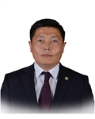

Member of the State Great Khural of Mongolia
Nyambaatar Khishgee
Member of the State Great Khural of Mongolia NYAMBAATAR Khishgee
Mongolian People's Party
Education, graduated schools, education degree:
1986 - 1996 Secondary school #48, Ulaanbaatar
1996 - 2000 BA in law, “Orkhon” University
2001 - 2002 MA in Pedagogy, “Orkhon” University
2006 - 2008 LLM at Police academy
Working experience:
2000 - 2007 Lecturer at “Orkhon” University
2005 - 2009 Barrister, Mongolian Barristers' Association
2009 Legal advisor, Songinokhairkhan district
2009 - 2012 Legal advisor, Songinokhairkhan district
2009 - 2012 Head of the Public administration and management department, Songinokhairkhan District
2012 - 2016 Chairman, Citizens representatives Hural of Songinokhairkhan district
2016 Member of the State Great Hural (Parliament) of Mongolia
Awards:
2011 Order of Labour
Foreign language knowledge:
English; Russian